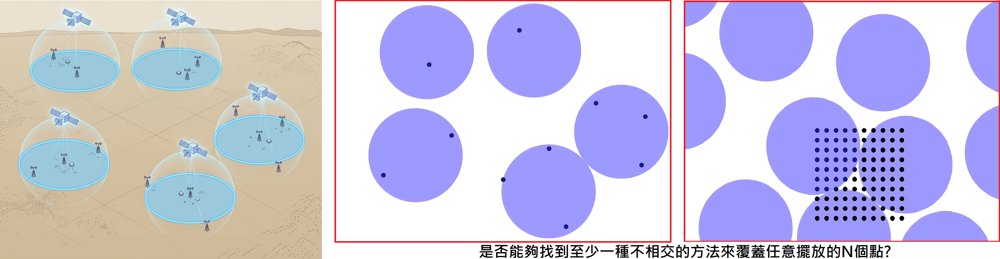
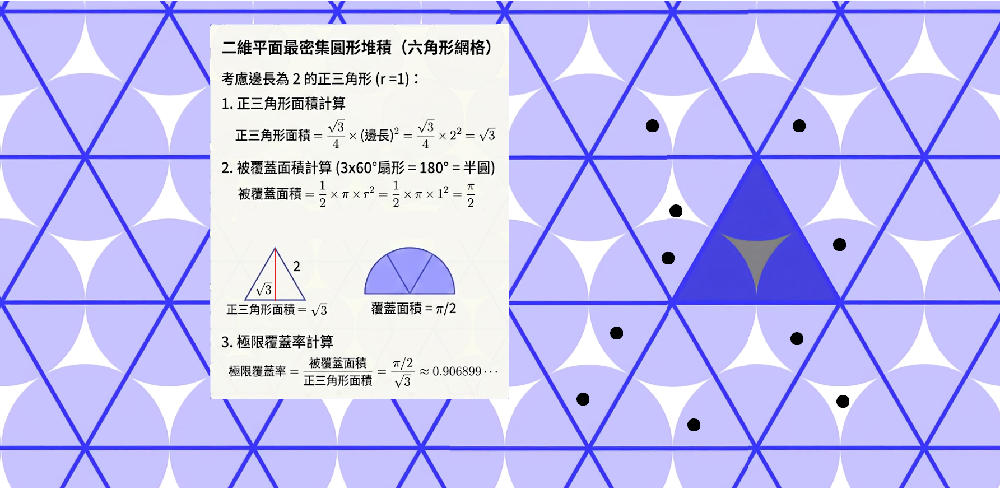

任意 \(N\) 點的幾何覆蓋問題：機率方法推導與蒙地卡羅驗證#
機率方法推導#
第一章：無重疊衛星陣列的挑戰（提出問題）#
想像你正在一片廣袤無垠的平原上進行研究，平原上已經隨機散佈了 \(N\) 個氣象觀測站。
我們現在擁有無限多顆人造衛星，每顆衛星能掃描的地面區域都是一個大小完全相同的正圓形。這裡有一個嚴格的限制：為了避免掃描訊號互相干擾，這些衛星的掃描圓圈絕對不可以重疊。
我們要解決的核心問題是：面對地上這 \(N\) 個位置未知的觀測站，我們是否一定能找到至少一種擺放這群衛星的方法，使得這 \(N\) 個觀測站同時都在掃描範圍內？

第二章：轉換視角——從「幾何」走向「機率」#
要從純幾何的角度去尋找那個完美的相對位置非常困難。因此，我們轉換視角，引入離散數學中的「機率方法（Probabilistic Method）」。
機率方法的核心思想是：如果我們隨機進行一個操作，只要「目標事件發生的機率嚴格大於 0」，那麼能達成該目標的具體方法就「必定存在」。
用數學語言來表達： 令事件 \(E\) 為「\(N\) 個點全部被圓形覆蓋」。 我們不需要精確算出 \(P(E)\) 的值，只要證明 \(P(E) > 0\)，就能確立「至少存在一種覆蓋方法」。
也就是說，如果我們把一整組衛星掃描陣列，透過一個隨機的二維向量 \(v\) 進行平移，只要：
我們的幾何難題就迎刃而解了。
第三章：滿鋪大地與最壞的打算（數學推導）#
現在，我們一步步來推導這個 \(P(\text{所有 } N \text{ 個點都被覆蓋})\) 機率。
步驟一：無限滿鋪與單點機率 因為我們現在只在乎 「存不存在至少一種覆蓋方法」 ，所以我們先不管到底需要動用多少顆衛星。我們直接把無數個圓形，以不重疊的方式盡可能地鋪滿整個平原 。
假設我們選定了一種鋪排方式，這種排法的 「覆蓋率」為 \(x\)（介於 0 到 1 之間，代表圓形面積佔總面積的比例）。 當我們把這整片無限延伸的圓形陣列進行隨機平移時，對於地面上 任意「單一個觀測站」 來說，它剛好落入某個圓圈內的機率，就恰好等於覆蓋率 \(x\)。 反過來說，單一觀測站「不幸落入掃描死角（沒被覆蓋）」的機率，令其為 \(P(A_i)\)，則：
步驟二：最壞情況下的「聯集上界（Union Bound）」 我們有 \(N\) 個觀測站，我們失敗的條件是「至少有 1 個觀測站沒被覆蓋」。 根據機率論中的聯集上界（Boole’s inequality），多個事件發生至少一個的機率，必定小於或等於各事件發生機率的總和，因為每一個點沒被覆蓋的機率都是 \(1-x\)，所以失敗機率的最壞情況（上限）為：
步驟三：確保勝利的門檻 我們希望成功的機率大於 0。因為 \(P(\text{成功}) = 1 - P(\text{失敗})\)，我們將剛才的上限代入，為了保證 \(P(\text{成功}) > 0\)，我們得到關於覆蓋率 \(x\) 的不等式：
第四章：圓形的極限與點數的邊界#
現在我們回到影片中的特例：我們使用的是「正圓形」。
數學家已經證明，在二維平面上用大小相同的圓形進行不重疊鋪排，最密集的排法是「六角形網格排法」，此時的極限覆蓋率為：

這是一個固定的常數。現在我們把它套用回我們剛才推導出的門檻 \(x > 1 - 1/N\)：
當 \(N=10\) 時： 需要的覆蓋率門檻是 \(1 - 1/10 = 0.9\)。 因為 0.906899 > 0.9，不等式完美成立！這代表我們「絕對可以」找到一種平移方式，用不重疊的圓形蓋住平面上任意隨機散佈的 10 個點。
當 \(N=11\) 時： 需要的覆蓋率門檻變成 \(1 - 1/11 \approx 0.909\)。 這時 0.906899 < 0.909，不等式被打破了。這意味著機率方法無法再給予我們保證。對於某些極端排列的 11 個點，圓形陣列可能真的會束手無策。
第五章：形狀的褪色與覆蓋率的勝利#
讓我們重新凝視剛剛得出的最終不等式：
步驟一：檢視我們「沒有」用到什麼資訊 請仔細看這個公式，裡面有半徑 \(r\) 嗎？有邊長 \(a\) 嗎？有任何關於角度、曲率、甚至是圖形是否連續的變數嗎？ 完全沒有。
這就是這個證明最優美的地方。在第一章到第三章的推導過程中，我們唯一使用到跟「圖形」有關的物理量，只有覆蓋率 \(x\)。我們完全不在乎那個用來覆蓋的圖案到底是完美的圓形、整齊的正方形、還是邊緣參差不齊的碎塊。
為什麼會這樣？因為在機率的視角下，一個點落入掃描區域的機率，只跟「掃描區域佔總面積的比例（也就是覆蓋率 \(x\)）」有關，而與這些面積是如何被塑造成什麼形狀毫無關聯。這成功地把一個極度複雜的「幾何空間問題」，降維打擊成了一個純粹的「機率與面積問題」。
步驟二：普適法則與 N=100 的極端挑戰 既然公式與形狀無關，這就賦予了這個定理強大的「普適性」。它告訴我們一個不可思議的幾何真理：任何形狀的圖案，只要覆蓋的密度夠高，就必定具備覆蓋任意散佈點的能力。
我們直接用 \(N=100\) 來舉例。假設今天平原上有 100 個觀測站，某個不懷好意的人故意把它們排成極度刁鑽、極度分散的位置，我們需要多強大的掃描系統才能保證一次覆蓋它們？
把 \(N=100\) 代入我們的不等式：
這代表什麼意思呢？ 這意味著，不管你的掃描圖案長得多奇怪——哪怕是像變形蟲🐛一樣的圖形，只要你把它們不重疊地鋪滿大地時 覆蓋率能超過 99% ，那麼面對這 100 個被惡意擺放的觀測站，你絕對可以找到至少一個平移位置將這 100 個點完美地同時籠罩在你的圖形之內。
反之，如果你的圖案覆蓋率只有 98% 🐞，即使你的圖案形狀設計得再精妙，只要對手把這 100 個點放在某些特定的死角，你就可能永遠找不到一次把它們全部蓋住的方法。
程式：蒙地卡羅驗證#
這個結論將機率的優雅展現得淋漓盡致，我們用極簡的邏輯，打敗了無限多種複雜的幾何排列可能。
既然我們已經徹底破解了這個二維平面上的覆蓋問題，試著思考看看：如果我們把這個推導邏輯寫成一小段 Python 程式碼，用蒙地卡羅方法（Monte Carlo method）隨機生成點位和網格來驗證這個給定 \(x\) 和 \(N\) 的計算科學界線。
import numpy as np
import matplotlib.pyplot as plt
import matplotlib.patches as patches
def find_perfect_coverage(N, x, max_attempts=100000):
"""
第一階段：尋找完美覆蓋的位置
使用拉斯維加斯演算法，不斷隨機嘗試直到找到解。
"""
# 檢查是否符合我們的數學定理門檻 x > 1 - 1/N
threshold = 1 - 1/N
print(f"【數學定理檢查】")
print(f"點數 N={N}, 設定覆蓋率 x={x}")
print(f"定理要求最低門檻: x > {threshold:.4f}")
if x <= threshold:
print("警告：目前的 x 沒有大於門檻，數學定理不保證有解！可能會找不到。")
else:
print("定理成立！保證絕對存在至少一個完美覆蓋的位置。開始搜尋...\n")
#np.random.seed(42) # 固定種子讓點的分佈一致
points = np.random.rand(N, 2)
L = np.sqrt(x)
attempts = 0
best_translation = None
all_covered = False
# 不斷隨機嘗試，直到找到為止 (或達到最高嘗試次數)
while not all_covered and attempts < max_attempts:
attempts += 1
# 隨機產生一個平移向量 (正方形的左下角基準點)
translation = np.random.rand(2)
# 利用 NumPy 廣播與取餘數 (% 1.0) 實作小精靈週期性邊界
relative_pos = (points - translation) % 1.0
# 檢查是否所有的點都在 L x L 的正方形內
if np.all((relative_pos[:, 0] < L) & (relative_pos[:, 1] < L)):
all_covered = True
best_translation = translation
if all_covered:
print(f"【搜尋成功】電腦嘗試了 {attempts:,} 次後，成功找到了完美位置！")
return points, L, best_translation, attempts
else:
print(f"【搜尋失敗】嘗試了 {max_attempts:,} 次仍未找到。請確認 x 是否大於門檻。")
return points, L, None, attempts
def visualize_perfect_coverage(points, L, translation, N, x, attempts):
"""
第二階段：將找到的完美覆蓋位置視覺化
"""
if translation is None:
print("沒有找到可用的平移位置，無法視覺化。")
return
fig, ax = plt.subplots(figsize=(8, 8))
ax.set_aspect('equal')
ax.set_xlim(-0.2, 1.2)
ax.set_ylim(-0.2, 1.2)
# 1. 畫出實驗平原邊界
main_area = patches.Rectangle((0, 0), 1, 1, fill=False, edgecolor='black', linestyle='--', linewidth=2, zorder=3)
ax.add_patch(main_area)
# 2. 畫出觀測站
ax.scatter(points[:, 0], points[:, 1], color='red', s=50, zorder=5, label='Observation station')
# 3. 畫出小精靈穿牆的九宮格分身
for dx in [-1, 0, 1]:
for dy in [-1, 0, 1]:
base_x = translation[0] + dx
base_y = translation[1] + dy
rect = patches.Rectangle(
(base_x, base_y), L, L,
fill=True, color='cornflowerblue', alpha=0.5,
edgecolor='royalblue', linewidth=1, zorder=2
)
ax.add_patch(rect)
ax.scatter(translation[0], translation[1], color='blue', marker='x', s=100, zorder=6, label='Perfect scanning reference point')
ax.set_xticks([])
ax.set_yticks([])
plt.title(f"Perfect coverage achieved! (Attempts required: {attempts} )\nN={N}, Coverage rate x={x:.3f}", fontsize=14)
plt.legend(loc='upper right')
plt.show()
# ==========================================
# 主程式執行區
# ==========================================
# 參數設定：N=10，根據定理 x 必須大於 0.9
N_points = 10
coverage_x = 0.70 # 設定在安全區 (0.95 > 0.90)
# 1. 執行搜尋
points_data, side_length, perfect_trans, try_count = find_perfect_coverage(N_points, coverage_x)
# 2. 執行視覺化
visualize_perfect_coverage(points_data, side_length, perfect_trans, N_points, coverage_x, try_count)
【數學定理檢查】
點數 N=10, 設定覆蓋率 x=0.7
定理要求最低門檻: x > 0.9000
警告：目前的 x 沒有大於門檻，數學定理不保證有解！可能會找不到。
【搜尋成功】電腦嘗試了 27 次後，成功找到了完美位置！
C:\Users\admin\AppData\Local\Temp\ipykernel_15204\3339517056.py:75: UserWarning: Setting the 'color' property will override the edgecolor or facecolor properties.
rect = patches.Rectangle(